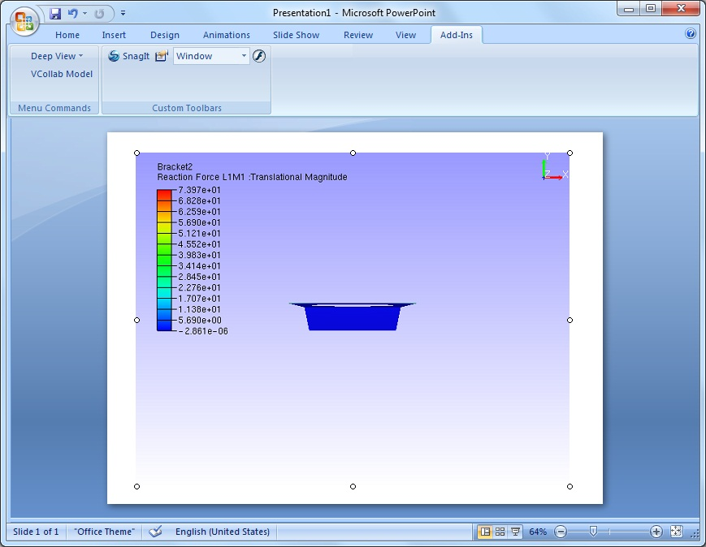
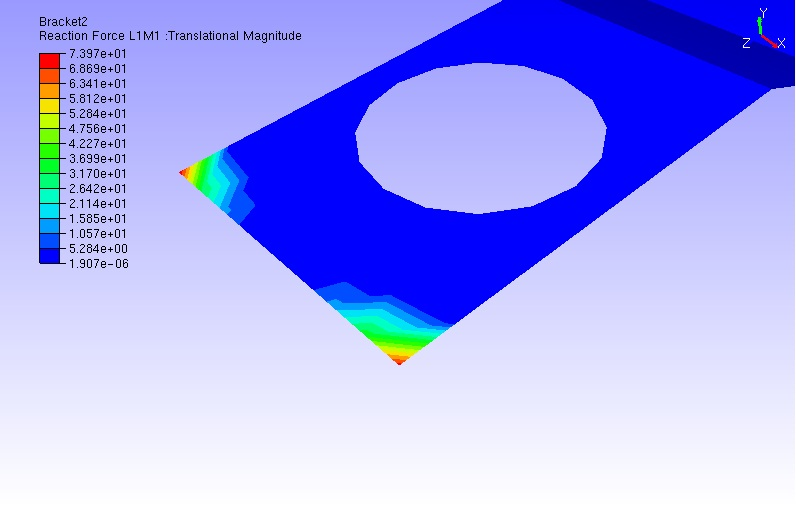

Enable Image Mode
VCollab Control embedded powerpoint slides take significant time to load. The Enable Image Mode is a useful option to avoid loading the heavy .cax file by default while using MS Office Products. For e.g., if the user saves the ppt when the presenter is in Image Mode, next time while opening it will not load the linked .cax data automatically. The user has the option to load the 3D model when needed. Thus presentation slides can load quickly using the Image mode option.
Steps to use the Enable Image Mode feature
- Embed VCollab Presenter control into Microsoft PowerPoint presentation tool.
- Load any CAX model.

- Run presentation.
- Do the necessary transformations to get the required view..
- Select Set As Image option from the context menu to capture current view as image.
- Select Enable Image Mode from the context menu.
- The latest captured image will be set as display image for image mode.

- Repeat the same for other pages which contain VCollab Presenter control.
- Save the presentation.
- Open the same presentation file now
- The slides load faster with the images embedded.
- Select Enable 3D Mode option to toggle to 3D mode whenever it is necessary during presentation.

- The above step resumes the presenter control to 3D Mode as below.

Note:
For image clarity in image mode, use the Set As Image option in Slide show mode of MS PowerPoint.